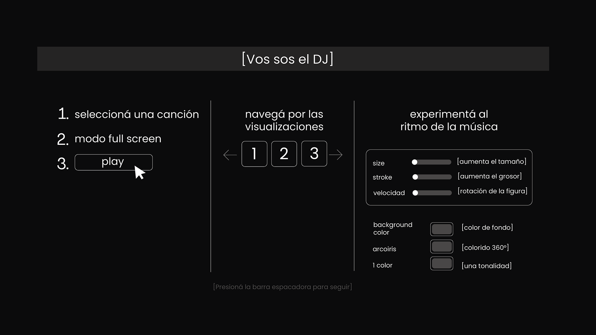

Mové y arrastrá
X
selecciona una canción:
Anyma - AfterLove
The Blaze- SHE
Rüfüs Du Sol- Next to me
Marsh - Me and You
CamelPhat - Breathe
Camelphat - For a Feeling
Claptone - The First Time Free
Bunt - Clouds